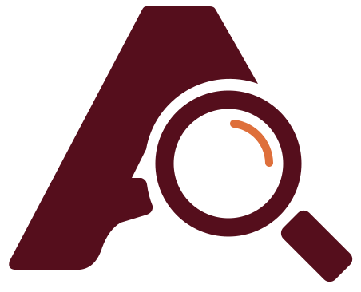

Kota bebas banjir
Sains-TeknologiInsinyur merancang saluran dan tanggul
Sosial-HumanioraPerencana kota dan sosiolog mengajak warga ikut menjaga

Tes minat gratis 3 menit untuk tahu kamu lebih condong ke IPA, IPS, atau dua-duanya.

SMA PLUS ADENTIFY
Petunjuk umum
Isi biodatamu dulu, ya.
SMA PLUS ADENTIFY
TES PETA MINAT
Lembar soal
Soal 1 dari 10
Petunjuk khusus
Tekan salah satu Jawaban yang menurutmu benar
I Manfaat
Santai, tanpa jawaban benar atau salah. Pilih saja yang paling kamu banget.
Hasilnya kecenderungan, bukan ranking. Nggak ada tipe yang lebih pintar dari yang lain.
Peta Minatmu menunjukkan mapel SMA yang cocok dan contoh profesinya, pas buat bahan ngobrol sama orang tua.
II Bukti
Masalah besar di dunia nyata selalu dikerjakan bareng, oleh orang sains dan orang sosial.
Sains-TeknologiInsinyur merancang saluran dan tanggul
Sosial-HumanioraPerencana kota dan sosiolog mengajak warga ikut menjaga
Sosial-HumanioraAhli pendidikan dan psikologi bikin orang betah belajar
Sains-TeknologiProgrammer membangun aplikasinya
Sains-TeknologiDokter dan peneliti menemukan obatnya
Sosial-HumanioraAhli komunikasi membuat informasinya dipercaya masyarakat
Pendidikan yang inklusif dan adil untuk semua adalah tujuan global SDG-4 (Quality Education).
III Tindakan
di kop lembar.
Nggak ada jawaban benar atau salah.
langsung di layar: tipe minat, mapel yang cocok, dan contoh profesi.
IV FAQ
Nggak. Ini panduan awal buat kenal kecenderunganmu. Keputusan akhirnya tetap di tanganmu.
Nggak ada. Tiga tipe punya kekuatan dan peluang yang setara.
Cuma buat mencatat hasil tesmu dan, kalau kamu setuju, mengirim info belajar. Datamu nggak dipakai buat hal lain.